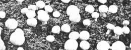
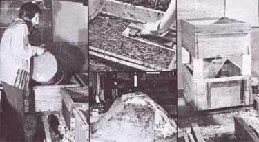

From Growing Your Own Mushrooms: Cultivating. Cooking & Preserving by Jo Mueller, copyright 1976 by Garden Way Publishing, Charlotte, Vt . and reprinted with the permission of the publisher. Available in paperback for $4.95 from any good bookstore or from Mother's Bookshelf.
Though most everyone loves to eat 'em, hardly anyone knows how to cultivate those delectable treats of nature known as ... mushrooms. Yet it's really not that difficult ... and with the expert guidance of Jo Mueller (plus a little dedicated work), you can soon be enjoying the rewards of raising this fascinating, nourishing, and highly prized food!
Cultivating mushrooms is considerably different from other gardening techniques and requires a different set of tools. Before beginning a venture with mushrooms you will need the following items:
[1] Pitchfork for handling compost. The type best suited has five or six prongs.
[2] Trays in which the mushrooms will be grown. Wooden trays or boxes made from old lumber are quite adequate. Use long nails or-better yetscrews when constructing these trays because the moisture from the compost tends to cause the wood to warp and the containers will not last through many growing seasons if poorly constructed. The trays should be from ten to twelve inches deep.
[3] Spawn. Spawn is a pure culture of mycelia (slender root-like filaments) that has been grown in specially prepared media and will continue to grow when placed in a suitable environment.
Moist spawn is actively growing mycelia that must be used immediately after it is received from the laboratory. This type allows growth to get under way quickly when introduced into the compost because it is already in the process of growing. While this type of spawn is used by commercial growers, it is fragile and must have a continuous supply of nutrients.
A home gardener cannot be certain that the compost will be at the proper stage for use when the spawn arrives. For this reason, it is more reliable and easier to use dry flake spawn or dry brick spawn. As the names imply, these are dry and dormant, so either may be kept until conditions are conducive to good growth in the mushroom house.
[4] Gypsum. The chemical name for gypsum is calcium sulfate. It can be purchased at building supply companies at very little cost.
[5] Watering can. A pump-type sprayer that gives off a fine spray or mist is needed to maintain the proper moisture content in the trays without adding large water droplets.
[6] Straw. Bales of straw can be bought from farmers or lawn and garden shops. The straw will be mixed with manure to form the compost.
[7] Manure. This is the item that makes mushroom growth possible. I use elephant manure simply because it is readily available from the local zoo. Usually horse manure is used. This is a "hot" manure and makes an excellent compost.
Other manures can also be used for composting. Cow manure is the exception. It does not make good mushrooming compost.
[8] Insecticides and fungicides. The conditions necessary for the vigorous growth and reproduction of mushrooms also favor a host of pests such as insects, roundworms, soil mites, bacteria, viruses, and undesired fungi. Some of these organisms spell disaster for the mushroom crop and must be either killed or suppressed.
Although some growers use a wide spectrum of insecticides and fungicides. I have used only three- malathion, zineb, and Alfatox. However, since the EPA standards are continuously changing, you should consult your county agricultural agent or state agricultural extension service for current recommendations and regulations regarding the use of pesticides.
[9] Thermometer. I always follow quite closely the heating up of the compost pile and this is best done with a stick thermometer or dairy thermometer. Also, when composting is complete, place the thermometer in the cropping area since the room temperature will greatly affect the crop and you will need to check it frequently.
[10] Sieve. To eliminate clumps of dirt and rocks from the casing soil, a sieve of 3/16-inch mesh is very useful. Make the sieve about 15 X 15 inches square and three inches deep.
[11] Peat. This is needed for casing the trays.
Let's call it the mushroom house even if it's an unused chicken coop, an old outbuilding on the back lot, an area under the greenhouse benches, or an old, unused coal bin.
It is best if you can regulate the temperature in the house. On one hand, mushrooms grow best at near 58 ° F, but a room temperature of 52 ° - 55 ° will yield a slower-growing but longer-lasting crop. On the other hand, if you increase the temperature to 620-650 the plants will fruit more abundantly but for a shorter period. A slower-yielding crop is desirable for the home grower, allowing the mushroom production to keep pace with the mushroom grower's appetite.
Just how much manure should you gather? A total of one-half ton of compost is needed to provide 60 square feet of growing surface. Alter the quantity to fit your needs.
After collecting the manure, you should thoroughly saturate it until the water begins to run out. Keep a spray of water playing over the manure while it is being unloaded. If it has been sitting awhile, it will absorb quite a lot of water, whereas fresh manure requires very little. Be certain to avoid manure that has aged in a pile for weeks or months. Old manure is partially decomposed and the nutrients so important for mushroom growth will have already been destroyed.
If you add straw to the manure, break open the bales and wet it thoroughly. This should be done several days before mixing the straw with the manure to provide ample time for water to soak into the straw. One part straw to one part manure will yield a fine compost.
If possible, prepare the compost stack under roof on a concrete floor. Rain passing through the stack will remove the composting organisms and leach away the nutrients, while further depletion of the nutrients will result from the activities of insects and roundworms which can enter from the soil below.
Also, never build the pile between solid board walls or in the corner of a shed or garage. Because of the reduced contact with air and oxygenless conditions, aerobic bacteria can no longer thrive.
While building the stack, sprinkle in about 20 pounds of gypsum per half-ton of manure. The gypsum (calcium sulfate) adds a source of calcium to the compost, making it available to the mushrooms, and also guarding against a sticky or slimy compost.
After the compost is stacked in a heap, place a long-stemmed thermometer in the pile and check it each day. When the temperature reaches 140 degrees, caramelization takes place. This is a chemical change that induces additional bacterial types to reproduce, forcing the temperature to go as high as 160 to 170 degrees. When caramelization occurs, you will notice the pile turning a rich brown color and the straw breaking into short pieces.
The pile should be turned every five or six days. At each turning it is important that the heap be literally turned inside out and upside down; the inside goes to the outside, the outside goes inside, the bottom of the pile goes on top, and the top goes on the bottom. This is quite a chore but if you completely change the makeup of the pile, the bacteria are restimulated to attack material that is yet to be converted into usable food. If parts of the stack appear dry, water should be added to ensure a saturated condition throughout, since bacteria will not function in dry areas.
Also, if the compost has a sticky texture, throw in a little more gypsum when turning the heap.
Have the trays sitting up on something-bricks, blocks of wood, or the like -in such a manner that air can circulate under them. If the trays are sitting in a row, two long 2 X 4's work nicely to keep the boxes off the floor. Put a preservative on any wood that is used since it is in contact with moisture nearly continuously. But it is important that you do not put preservative on surfaces that come in contact with the compost, such as the inside of the trays.
After the trays are filled with compost (to within 1-1/2 or 2 inches of the top when packed down), most growers insist on a final heating of the entire mushroom house and its contents. They heat the area to 140 degrees for four hours so even the organisms in the nooks and crannies are destroyed. This process is called pasteurization.
I never take this pasteurization step. Just before bringing in the compost, I spray the mushroom house with fungicide and insecticide and the organisms within the compost are already under control. Some mushroom houses leak in so many spots that it is impossible to get the heat up, and in these cases the most effective technique is to spray the house liberally before bringing the compost inside.
And now a word of encouragement for the organic gardener. If you plan to crop in an area that can be steamed, you'll have no difficulty, but usually steaming isn't practical on most homesteads. What are your other options? You will have a better chance of maintaining healthy plants if your mushroom house is in the cellar rather than in an outbuilding. Also, if you can divide your crop, placing a few trays under the stairs, a few more in the wash area, and so forth, then the probability of disease spreading through the trays is greatly reduced. If you must use an outbuilding, it is essential to have all windows and openings covered with a very fine screen to reduce the number of pests gaining entrance.
Because good sanitation plays a big role in pest control, your efforts must be concentrated in this area. By faithfully removing decaying organic matter, stagnant water, and rubbish you will eliminate breeding places for potential problem-makers.
After the trays are filled, you may still detect an ammonia odor. Never introduce spawn while there is even a faint smell of ammonia in the trays because the mycelia would be destroyed. Only after the rather pungent odor of ammonia has completely disappeared should you add spawn to the compost.
Whether using dry brick or dry flake spawn, apply about one quart to every 12 to 15 square feet of compost. When using brick spawn, insert a piece about 1-1/2 inches square every 6 inches to a depth of 1 to 2 inches. Cover the spawn with compost and firm down. This procedure has been used for many years in the United States and in Europe and it is very effective.
In the last few years another method of introducing spawn into the compost has proved to be more acceptable. This technique utilizes flake spawn. The compost is allowed to mature in the stack until all ammonia odor has disappeared. This usually requires one extra turning. At this point, dry flake spawn is sprinkled over the compost and thoroughly mixed into it. The compost-spawn mixture is then placed into trays. Instead of pressing the compost firm, it is lef t loose for 24 hours.
Since it will be pressed down later, fill the boxes slightly heaping so that when it is compressed the compost will reach to within 1-1/2 to 2 inches of the tops of the trays.
After spawning, the mycelia run or grow through the compost for two to three weeks. The trays are ready to be cased when a network of the cottonlike mycelia. covers the compost surface. Throughout this period the compost will require watering with a fine spray to maintain the correct moisture content. If the compost becomes dry, the mycelia will die, but if it is remoistened, the remaining viable strands will continue to grow.
Mushrooms will not emerge from the compost but will form only if another layer of material, called the casing, is placed over the compost. The casing provides the growing mycelia with a layer in which to aggregate and send up mushrooms. The casing material should be placed on the surface of the compost to a depth of I to 1-1/2 inches.
A variety of substances can be used for casing the trays. Soil is good but it should be neither too heavy and claylike nor too sandy. Prepare the soil by first passing it through a fine-mesh screen (3/16-inch mesh works fine to remove the clumped soil and pebbles). I think it's wise to spray the soil with 2 percent formalin solution to reduce contamination, although many growers eliminate this step.
Just prior to applying the casing, mix in about one-third peat by volume. This will prevent compaction and also provide nutrients for the mushroom mycelia. Without the peat, the casing becomes crusty after frequent watering and the tiny pinheads have difficulty breaking through the surface crust.
When adding peat to the casing soil, use horticultural rather than bedding peat because it is less acidic. For good measure, I throw in about a cup of lime for each bucketful of peat used since an alkaline casing is necessary for a successful crop.
The moisture content of the casing is rather important to control because fructification cannot take place unless the casing is moist. To apply water directly to the casing after it is added to the compost would injure the developing pinheads, so place several sheets of newspaper directly on the surface of the casing and then twice a day add just enough water to keep the paper moist. The mycelia will grow into the casing layer and become established immediately after it is applied. This will not occur if the casing material is disturbed in any way or if it becomes too dry.
After 10 days, carefully remove the newspaper covering the trays. At this point the proper watering of the beds requires great care and sensitivity. The goal is to maintain a moist casing, but overwatering can be disastrous. If too much water is applied it will percolate through the casing into the compost and kill the mycelia. If too little water is supplied, the layer of casing next to the compost becomes dry and the mushrooms will not grow abundantly.
Normally beds require watering at least every other day. Sprinkle lightly with a fine mist and then after an hour or so another light sprinkling should be sufficient. Until you get the feel of the amount of water needed, stick a finger into the casing to learn if it is moist all the way through.
If all goes well you can expect to see pinheads appearing over the surface of the beds approximately 12 days after the casing was added. These pinheads will mature into fully formed mushrooms in about 6 to 8 days. The mushrooms will appear in flushes or blooms every 10 to 14 days and will continue to do so for 60 to 120 days depending upon the temperature of the mushroom house.
Between flushes, the moisture content must remain high and this is accomplished by frequent watering with a fine mist. Mushrooms are over 70 percent water, and this water is taken from the compost and casing. After pinheads appear, and while the mushrooms are undergoing rapid growth, refrain from adding water if possible because water on the caps will cause brown spots to develop, making them appear less appetizing.
The growth stage at which the mushrooms are picked depends almost entirely on how they are to be used. You may pick mushrooms while they are small buttons, after they have enlarged considerably but before the veil has broken, or still later after the veil has broken and the cap is near its maximum diameter.
When a mushroom is picked, the base of the stem which remains in the casing mixture must also be removed. Failure to do this would provide a substrate for bacterial growth which would reduce the quantity of mushrooms produced. A paring knife works well in removing the small stub of mushroom stem that remains behind in the casing.
|
 Left: Composts is heavy... fill your trays in position. Top center: Press down and smooth compost 24 hours after it is put in the trays.Bottom: A cover helps keep the compost pile moist. Right: If spaces is limited, trays can be stacked. |
 |
|